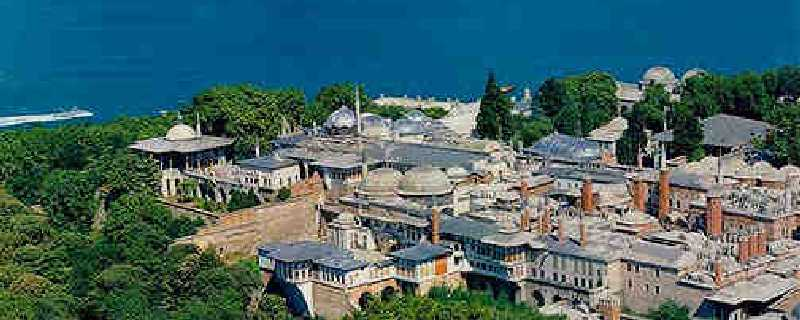
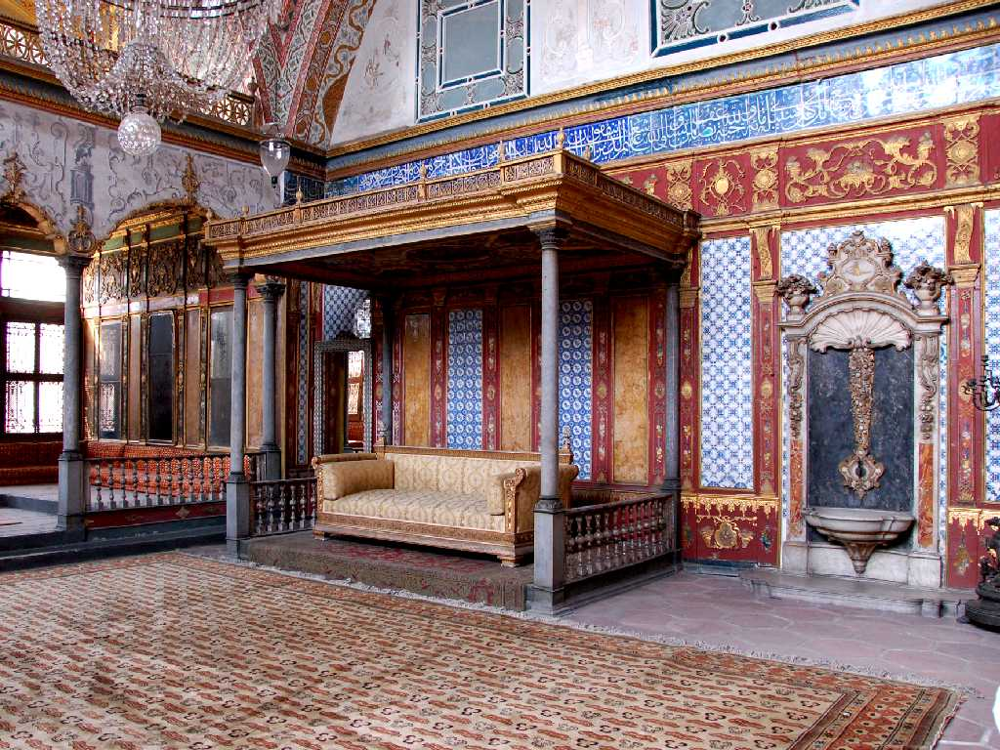
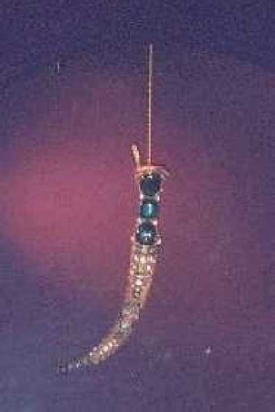
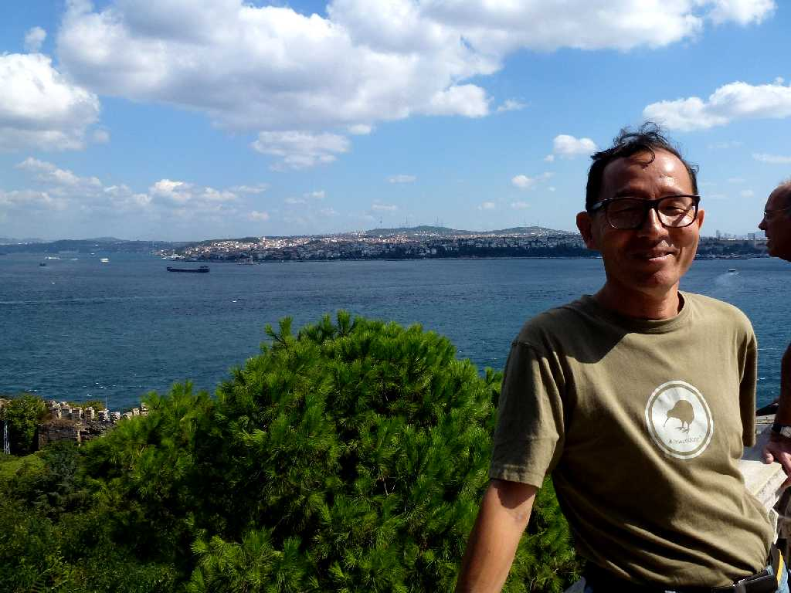

Topkapi Palace Istanbul
１５世紀からオスマン帝国の首都となりイスラム世界最大の都市に発展しその栄華を今に残すのがこのスルタンの宮殿である

Harem Topkapi Palace

The Emerald Dagger
世界最大のエメラルドがはめ込まれた短剣が有名である

September 26 2011 Bosphorus Strait Topkapi Palace